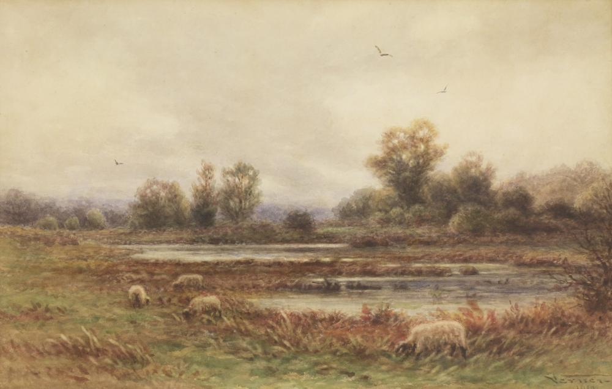
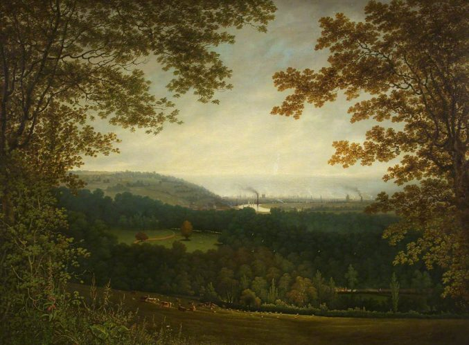
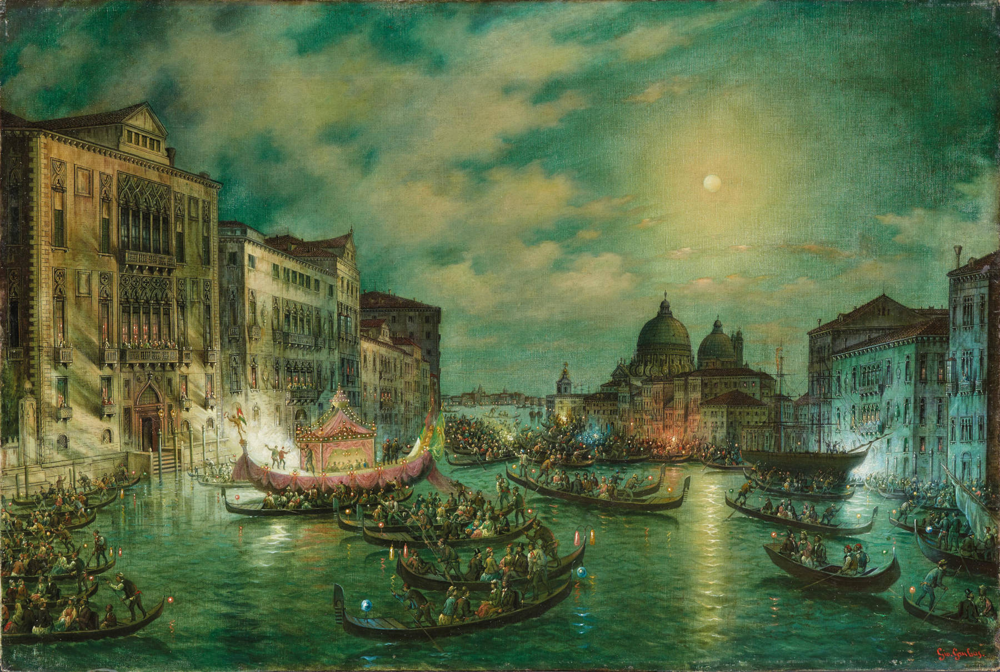

Descoperiri revolutionare
Descoperirea roții a ajutat cu transportul și comerțul, facilitând dezvoltarea civilizațiilor.Invenția tiparului de către Gutenberg a accelerat răspândirea cunoștințelor, influențând profundcultura și știința. În secolul XX, internetul atransformat societatea, oferind acces instantaneu la informații la nivel global.
Citeste mai mult

Evenimente importante
Primul Război Mondial (1914-1918)
Al doilea razboi mondial (1939-1045)
Căderea Constantinopolului (1453)
Declarația de Independență a Statelor Unite (1776)
Revoluția Industrială (secolele XVIII-XIX)
Citeste mai mult

Alegerile mele
Joan d'Arc a fost o tânără franceză din secolul XV care a condus armatele franceze împotriva englezilor în Războiul de 100 de Ani, fiind ulterior canonizată ca sfântă după ce a fost arsă pe rug pentru erezie. Asasinarea Romanovilor, care a avut loc în 1918, se referă la execuția ultimului țar al Rusiei, Nicolae al II-lea, împreună cu familia sa, de către bolșevici, marcând sfârșitul dinastiei Romanov și consolidarea regimului comunist în Rusia. Marie Antoinette a fost regina Franței în perioada Revoluției Franceze, cunoscută pentru izolarea de problemele sociale ale vremii, fiind executată prin ghilotinare în 1793.
Citeste mai mult
